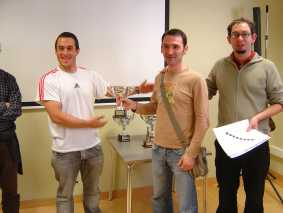
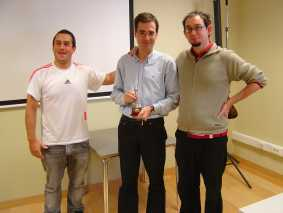
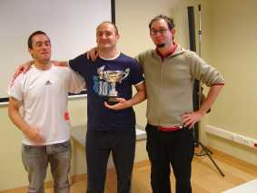
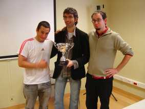

Agustin de Leitza Xake Elkartea |
| » hasiera » elkarteko bazkideak » taldekako txapelketa » azken txapelketak » loturak |
Fortunako pintxetakPasa den urriaren 5ean jokatu genuen Fortuna xake taldeak antolatu duen pintxeta txapelketa. Nahiz eta azken ordurako abisua izan hara joan ginen ohorezko taldea, Iosu, Claudio, Javi eta Félix, orden horretan. Azkenean 8 talde egon ginen, azken ordutan 2 talde erori zirelako, eta 10 taldetarako janaria jan genuen 8 taldek.Txapelketa hasi baino lehen faborito nagusia Fomento zen, eta gero bigarren posturako leihatzeko Fortuna, gu eta Zarauz. Iragarkiak bete ziren eta Fomentok irabazi zuen txapelketa, eta gero, ez oso urruti, Fortuna eta gu, berdinduta baina Fortunak lortu zuen bigarren postua gure arteako emaitzagatik. Azpimarratzeko da Iosuren txapelketa, lehen mahiako jokalari onenari trofeoa irabazi baitzuen. Janariari dagokionez, oso ona eta ondo egina, eta horren lekuko da ez dagoela horren argazkirik, ez zuen denbora eman.     |